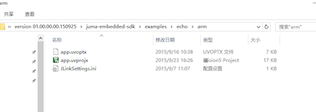
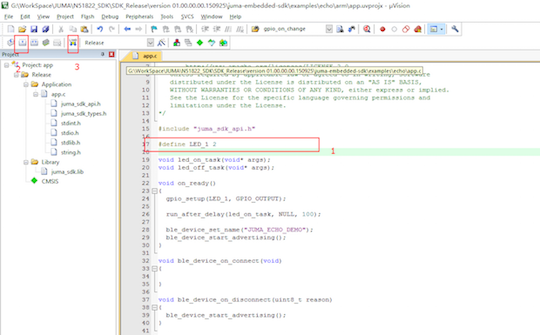
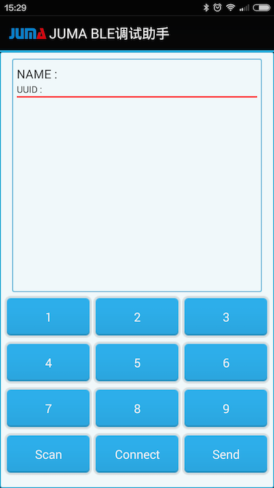
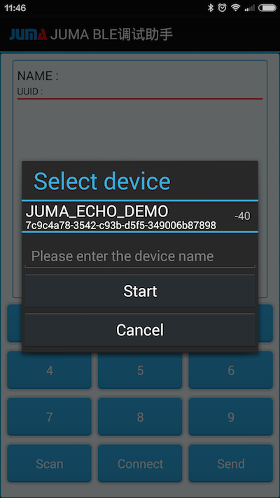

NOVA的例程: 回声
本例程用以说明如何在NOVA上实现ECHO例程，ECHO例程是需要将手机和NOVA进行通信。
当NOVA接收到手机发来的数据后，会原封不动的回复给手机，以此体现ECHO(回声)的意思。
本例程的知识点：
- 嵌入式SDK的使用；
- NOVA的烧录；
- BLE通信(扫描、建立连接、收发数据)等；
- BLE调试助手的使用；
获取SDK集成包¶
下载最新的嵌入式SDK(发布版)：
https://github.com/JUMA-IO/nRF51_Platform/releases
如JUMA nRF51 Platform SDK v1.0.2：

注意，如果您想获知最新的代码改动情况，请使用github的“watch”功能。
编译和下载固件¶
打开对应的echo的例子：

双击 app.uvprojx打开对应的工程项目：之后打开app文件，会看到如下所示的内容。

由于NOVA上面有一个LED其引脚为2所以，需要修改一下图中的那个宏定义，之后点击编译，最后执行下载。只要按照图中红框中的的步骤操作就可以了。
注：确保嵌入式环境搭建正确，请参阅右侧的“烧入方法”篇幅。
安装BLE调试助手¶
1.应用市场安装
您可以从AppStore和应用宝，下载和安装“JUMA BLE调试助手”:
- iOS版本: BLE调试助手_AppStore
- Android版本: BLE调试助手_应用宝
2.Android APK安装
如果使用Android手机，在SDK集成包里含有“JUMA BLE调试助手”，可以直接安装：

3.自行编译源码安装
- iOS版本: BLE调试助手_iOS_Github
- Android版本: BLE调试助手_Android_Github
使用BLE调试助手连接NOVA¶
安装好安卓调试助手后，点击Scan进行设备扫描：

之后会看到如下的扫描结果：

- 点击 JUMA_ECHO_DEMO选取要连接的设备。
- 点击下方的Connect进行连接。
- 发送相应的数据，在APP上可以看到会收到来自板子的与发送内容相同的回应。